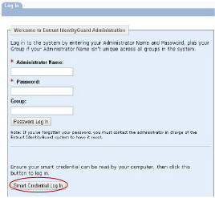
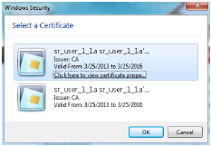

|
IdentityGuard Server 13.0 Administration Guide |
|
IdentityGuard Server 13.0 Administration Guide |
This section describes smart credential single sign-on to the Administration interface:
1. An Entrust IdentityGuard administrator, Bob, navigates to the Administration interface.
2. The Administration interface is displayed, with a Smart Credential Login button.

3. Bob clicks Smart Credential Log In.
4. His browser requests a client certificate for login. If Bob has more than one smart credential, the request displays a list of the smart credentials.

5. Bob selects his smart credential and enters his smart credential PIN.
6. The Administration interface uses a built-in administrative account with the delegationadmin role to gain access the Entrust IdentityGuard APIs necessary to perform the user authentication.
7. Bob is logged in to the Administration interface with access to the functionality defined by his Entrust IdentityGuard role and the applicable policy.